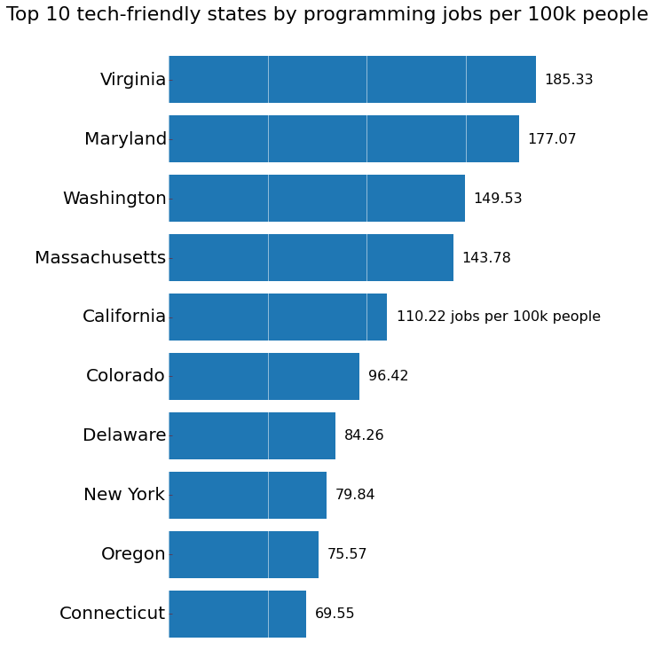
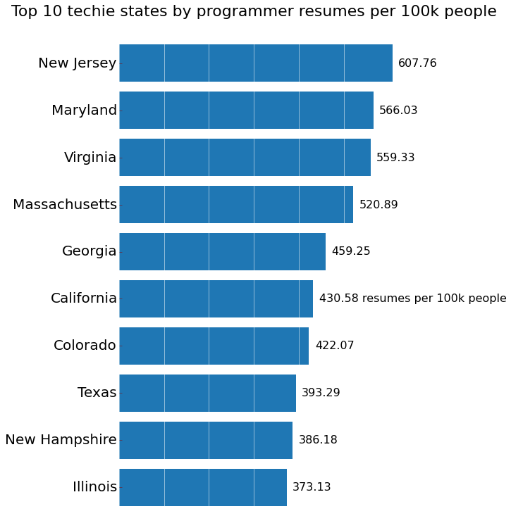
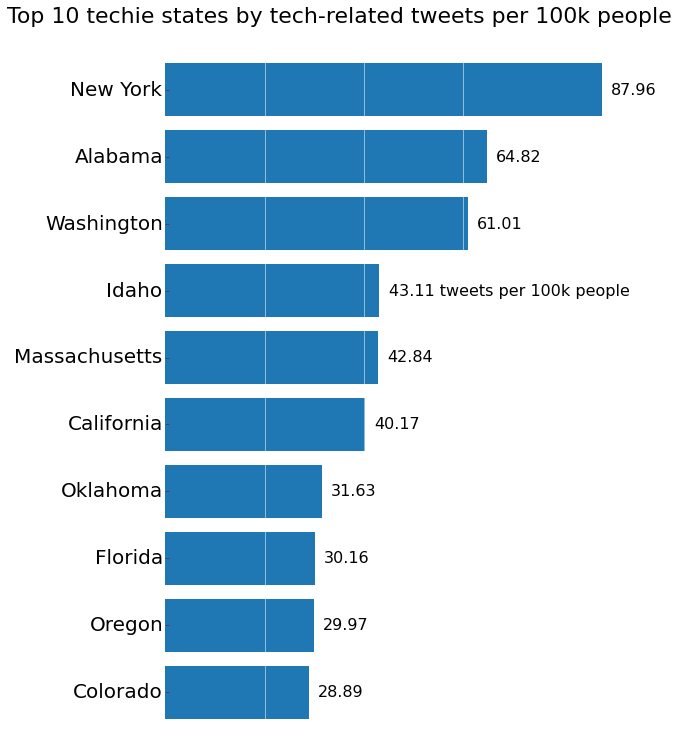

<h1>Job maps</h1>

<ul>
<li><a href="us_map_browser_jobs.html">Browser keywords</a></li>
<li><a href="us_map_database_jobs.html">Database keywords</a></li>
<li><a href="us_map_language_jobs.html">Programming language keywords</a></li>
<li><a href="us_map_language_jobs_no_sql.html">Programming language keywords - excluding SQL</a></li>
<li><a href="us_map_os_jobs.html">Operating system keywords</a></li>
</ul>


<h1>Twitter maps</h1>

<ul>
<li><a href="us_map_browser_tweets.html">Browser keywords</a></li>
<li><a href="us_map_database_tweets.html">Database keywords</a></li>
<li><a href="us_map_language_tweets.html">Programming language keywords</a></li>
<li><a href="us_map_os_tweets.html">Operating system keywords</a></li>
</ul>

<h1>Top 10 lists</h1>



<br />



<br />

